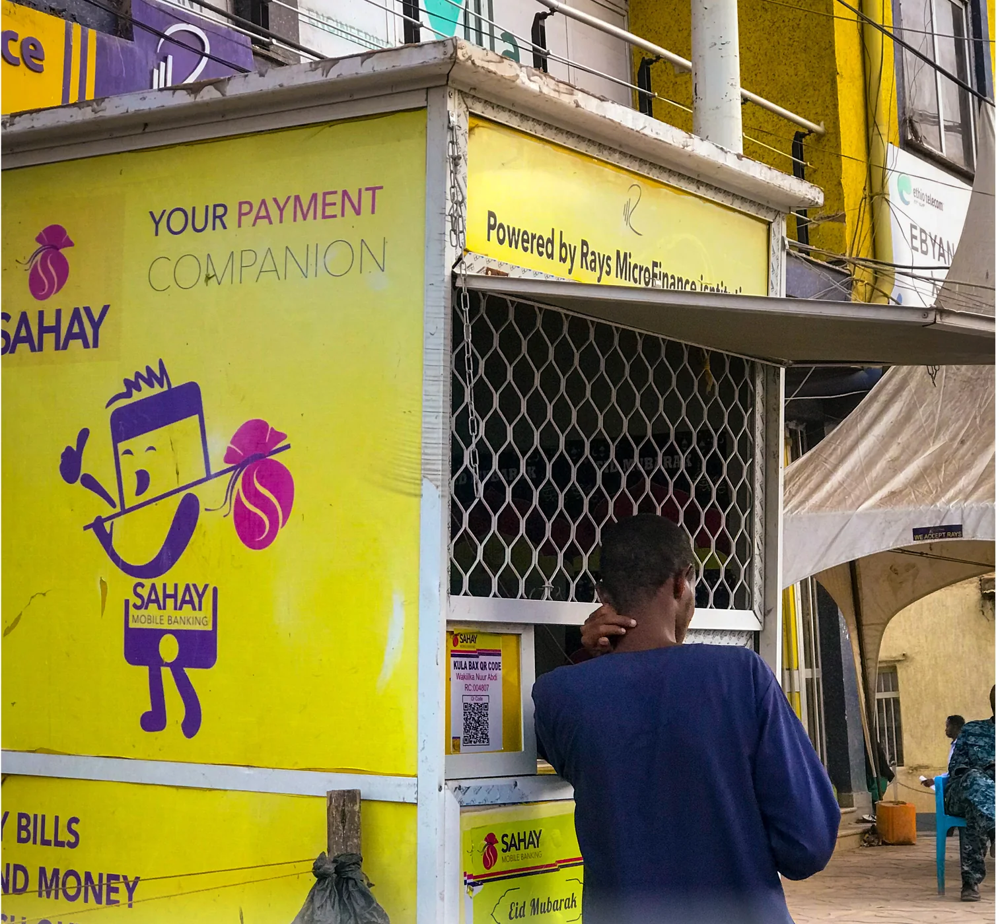
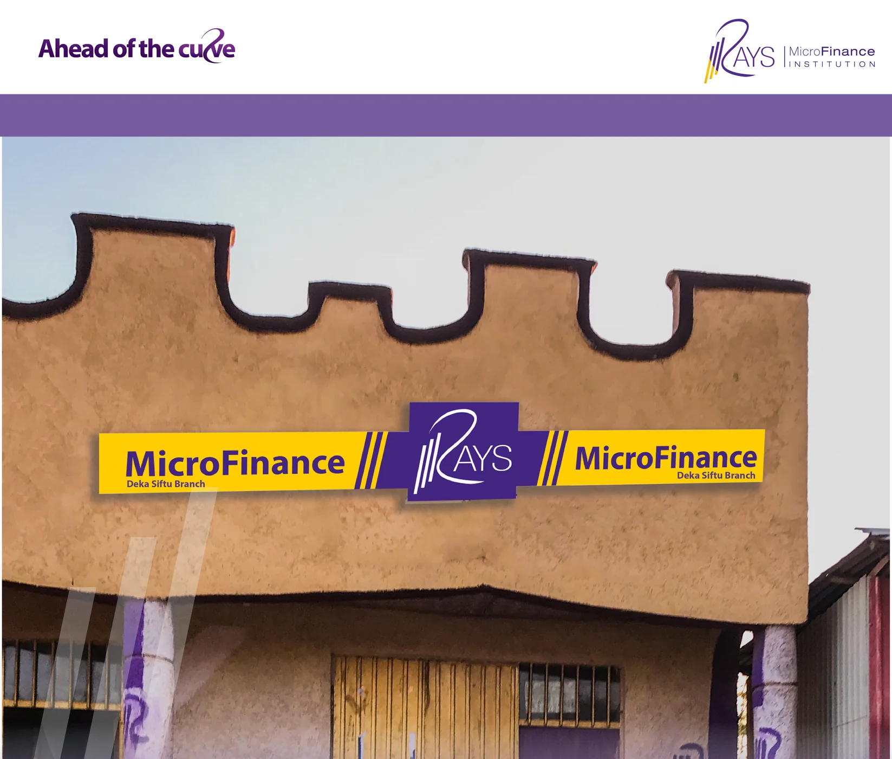
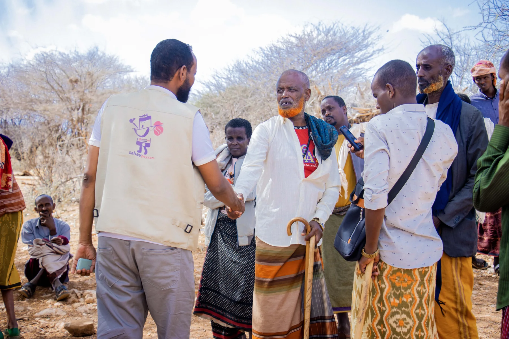

01
Productive finance
Sharia-compliant financing structures for trade, agriculture, livestock, equipment and enterprise, alongside savings products.
CAPITAL → ACTIVITY
RAYS AT ETHIOPIA FINANCE FORUM 2026
Productive, interest-free finance. Digital infrastructure. Partnerships with the capacity to turn opportunity into economic activity.
AN ETHIOPIAN FINANCIAL INSTITUTION
RAYS Microfinance Institution brings together Sharia-compliant financing, savings, digital services and local delivery. Its model links financial products to the assets, transactions and enterprises that power daily life.
See how the model worksSharia-compliant financing structures for trade, agriculture, livestock, equipment and enterprise, alongside savings products.
Core banking, SahayPay, mobile access and agent services connect institutional systems with everyday transactions.
A regulated operating institution with the products, technology and local presence to collaborate across the financial sector.
FROM A PRODUCT TO A PLATFORM
A financing decision matters when it reaches a real purchase, business or livelihood. RAYS combines its financial products with channels that help people access and use them.


CAPABILITY, SEEN ON THE GROUND

RAYS FIELD ACTIVITY · SOMALI REGIONRAYS’s field network and staff also support partner programmes that need accountable, person-to-person delivery. The documented cash-assistance activity in our archive shows registration, verification and service in practice.
This example documents humanitarian cash assistance delivered with partners. It is distinct from RAYS’s financing products.
Explore partnership areasA short introduction to RAYS’s products, infrastructure, presence and partnership capability. Captions are built into the film for silent playback.
RAYS is interested in conversations that connect its financial model and infrastructure with capital, technology and programmes serving the real economy.
Funding, co-financing and financial inclusion programmes.
Distribution, integration and digital financial services.
Finance linked to productive activity and market access.
Programmes requiring local delivery and accountable systems.
Meet the RAYS team at Ethiopia Finance Forum 2026. Call to continue the conversation.
Call RAYS +251 11 470 1834Save RAYS contact ↓